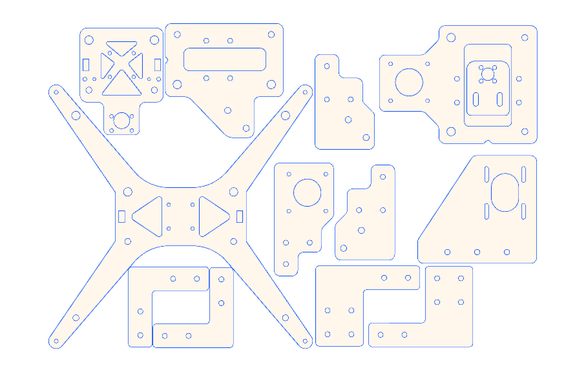

About me

As I was very excited about 3D printing but didn't have the money to put into an expensive pre-built printer I decided to assemble one myself. I purchased a 3D printer kit which was basically extruded alumnum, stepper motors and sevral hundred tiny pieces. The instructions that came in the box were in all honesty, pretty terrible and havong little to no prior experience with 3D printers the assembly process took quite a while. While this was a bit frustrating after 10+ hours of assembly, troubleshooting, & code tweaking. I understand my printer as well as 3D printing as a whole so much more.
After I had it completed and printing I wasn't done yet. I began making inprovements constantly. One of the very first ones was replacing the acrillic pieces that come with the kit. One of the things that made me choose this printer over other ones was the nice extruded aluminum frame, however to join almost all of those gorgeouse aluminum bars were flimsy acrillic pieces which I'm sure was to keep the price of the printer down but hey a printer is only as strong as its weakest link? So I cut replacement pieces out of aluminum on a waterjet, deburred and sanded, then finally powdercoated them to match the black frame.
The next big change was adding secondary Z-motor, this was another reason this printer kit was so inexpensive. While the printer worked decently without a second motor the gantry had a habit of dipping lower on the side without the motor. So I cut a second motor mount, got another stepper and lead screw and connected it in parrallel to the existing motor.
The next big change was adding secondary Z-motor, this was another reason this printer kit was so inexpensive. While the printer worked decently without a second motor the gantry had a habit of dipping lower on the side without the motor. So I cut a second motor mount, got another stepper and lead screw and connected it in parrallel to the existing motor.